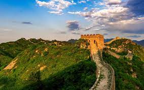

HOME
ABOUT
SERVICE
GALLERY
CONTACT
SEVEN WONDERS
OF THE
WORLD!
15 DAYS 14NIGHTS PER PERSON($5,000)
Book now

THE GREAT WALL OF CHINA
The Great Wall of China is a series of fortifications that were built across the historical northern borders of ancient Chinese states and Imperial China as protection against various nomadic groups from the Eurasian Steppe
TAJ MAHAL
The Taj Mahal, is an ivory-white marble mausoleum on the right bank of the river Yamuna in the Indian city of Agra. It was commissioned in 1632 by the Mughal emperor Shah Jahan to house the tomb of his favourite wife, Mumtaz Mahal; it also houses the tomb of Shah Jahan himself.
THE COLOSSEUM
The Colosseum is an oval amphitheatre in the centre of the city of Rome, Italy, just east of the Roman Forum. It is the largest ancient amphitheatre ever built, and is still the largest standing amphitheatre in the world today, despite its age.
THE CHICHEN ITZA
Chichén Itzá is a complex of Mayan ruins on Mexico's Yucatán Peninsula. A massive step pyramid, known as El Castillo or Temple of Kukulcan, dominates the ancient city, which thrived from around 600 A.D. to the 1200s. Graphic stone carvings survive at structures like the ball court, Temple of the Warriors and the Wall of the Skulls. Nightly sound-and-light shows illuminate the buildings' sophisticated geometry.
MACHU PICCHU
Machu Picchu is an Incan citadel set high in the Andes Mountains in Peru, above the Urubamba River valley. Built in the 15th century and later abandoned, it’s renowned for its sophisticated dry-stone walls that fuse huge blocks without the use of mortar, intriguing buildings that play on astronomical alignments and panoramic views. Its exact former use remains a mystery.
CHRIST THE REDEEMER
Christ the Redeemer is an Art Deco statue of Jesus Christ in Rio de Janeiro, Brazil, created by French sculptor Paul Landowski and built by Brazilian engineer Heitor da Silva Costa, in collaboration with French engineer Albert Caquot. Romanian sculptor Gheorghe Leonida fashioned the face
PETRA
Petra is a famous archaeological site in Jordan's southwestern desert. Dating to around 300 B.C., it was the capital of the Nabatean Kingdom. Accessed via a narrow canyon called Al Siq, it contains tombs and temples carved into pink sandstone cliffs, earning its nickname, the "Rose City." Perhaps its most famous structure is 45m-high Al Khazneh, a temple with an ornate, Greek-style facade, and known as The Treasury